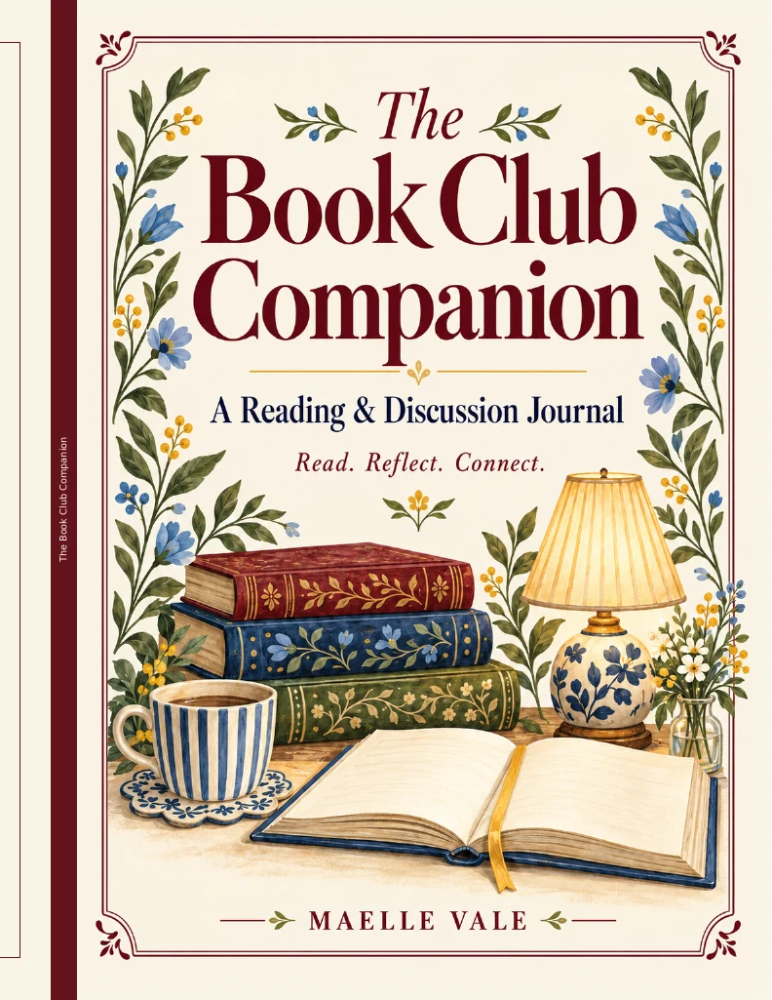

Reading Journal
The Book Club Companion
A Reading & Discussion Journal
A thoughtful place for reading notes, favorite passages and conversations worth remembering.
View on AmazonAvailability and pricing may vary by marketplace.

A Reading & Discussion Journal
A thoughtful place for reading notes, favorite passages and conversations worth remembering.
View on AmazonAvailability and pricing may vary by marketplace.